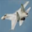
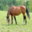

Imagen original

Avión · 32 × 32 píxeles
Referencia
Resumen visual para comparar.
Elige una imagen, transmítela por un canal con ruido y compara su huella visual. Comprueba también qué pasa si se recibe otra imagen o se altera su referencia autenticada.
Primero validamos la referencia. Después comparamos las imágenes.
Demostración: emisor y receptor comparten una clave temporal dentro de esta misma página.
Avión · 32 × 32 píxeles
Referencia
Resumen visual para comparar.
Encoder → ruido → decoder
Esperando transmisión
Aquí aparecerá el resultado real.

Caballo · comparación directa
Esperando verificación
Aquí aparecerá el resultado real.
¿Qué decide PISV? Primero autentica la referencia con HMAC y revisa su identificador y nonce. Si pasa, cuenta cuántos bits cambian entre dos huellas de 64 bits. Una distancia menor indica huellas más parecidas. Cambiar la tolerancia modifica la decisión; no mejora la imagen.
Haz clic en cada bloque para seguir la última transmisión. El recorrido usa la imagen elegida y los resultados reales del modelo.
El recorrido explica una transmisión ya calculada. Su velocidad de animación no representa el tiempo de procesamiento.
El modelo reconstruye cada imagen con una nueva muestra de ruido. Los ejemplos de CIFAR-10 tienen 32 × 32 píxeles y fueron elegidos por ser reconocibles. Ampliarlos no agrega detalles, y esta galería no sirve para medir la precisión del protocolo.
La aceptación requiere una referencia válida y una distancia dentro del umbral. HMAC-SHA256 autentica la huella y sus metadatos con una clave compartida. El identificador vincula la referencia con la imagen y el nonce permite detectar referencias repetidas durante esta sesión. La similitud visual no garantiza el significado de la imagen. El canal de comunicación está simulado. La clave y el registro de nonces se renuevan al recargar la página.